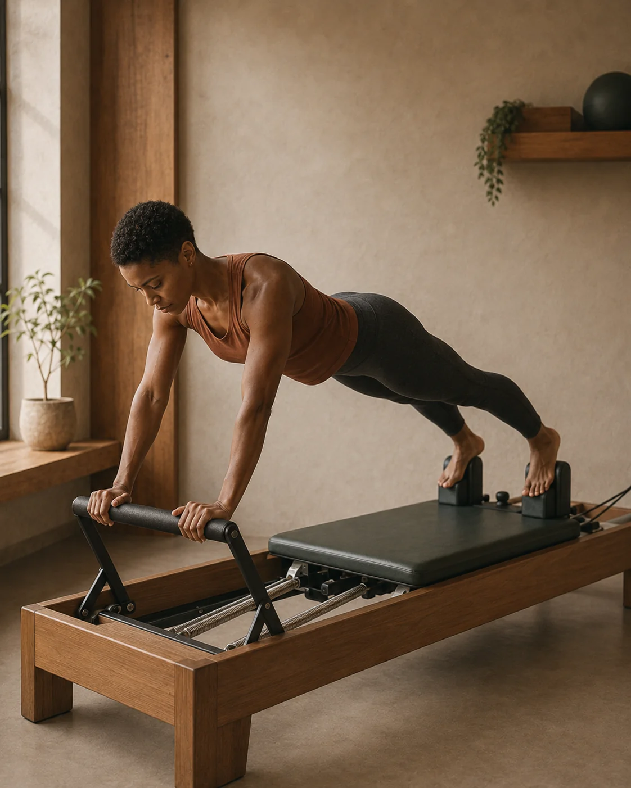
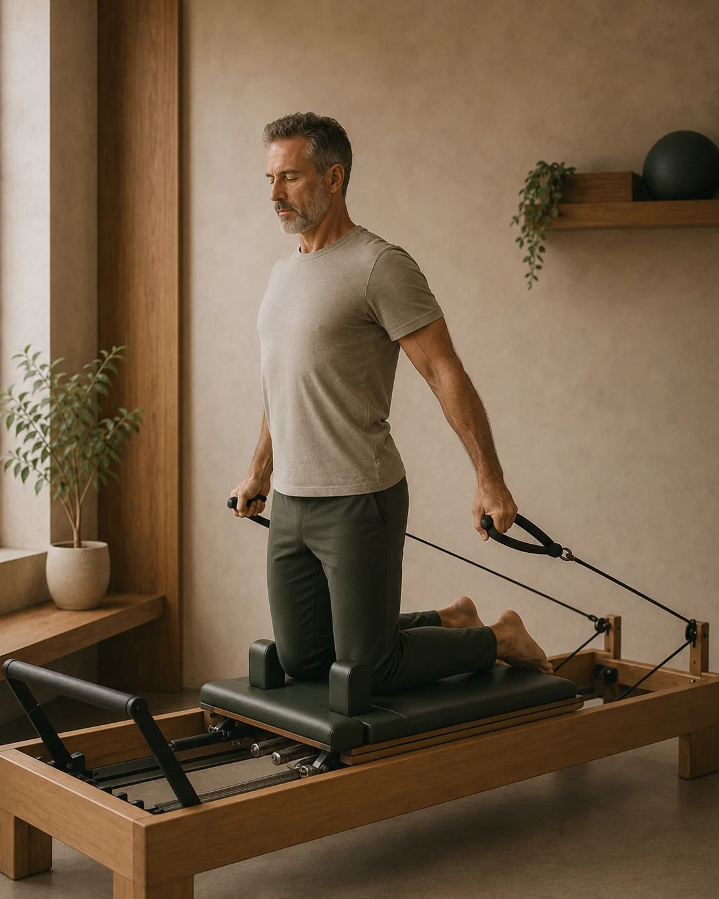
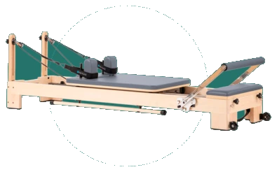
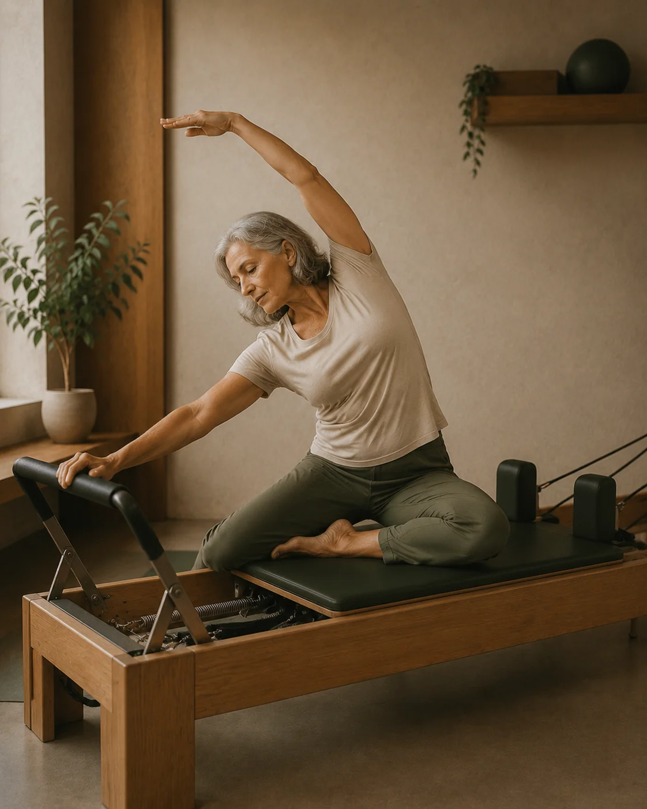

Movilidad
Moverte con mayor libertad y control en cada articulación, sin rigidez ni tensiones forzadas.
04 — PILATES REFORMER
Pilates propone un trabajo guiado sobre la forma en la que te mueves. El objetivo no es repetir una clase genérica, sino desarrollar mayor control corporal, movilidad y estabilidad desde tu punto de partida.

Qué es Pilates Reformer
A diferencia del trabajo en suelo, el Reformer introduce muelles de tensión graduada, un carro móvil y poleas para brindar soporte biomecánico o crear un estímulo de fuerza y control milimétrico.
No se trata de seguir una coreografía grupal ni de forzar posturas: guiamos cada movimiento para que tu cuerpo aprenda a organizarse con fluidez, estabilidad y sin sobrecargas innecesarias.

Capacidades físicas
Cinco capacidades fundamentales integradas en un patrón de movimiento consciente, armónico y seguro.

Moverte con mayor libertad y control en cada articulación, sin rigidez ni tensiones forzadas.
Aprender a gestionar mejor cada fase del movimiento, desde el inicio del gesto hasta la desaceleración.
Crear una base más sólida para moverte, fortaleciendo el core profundo y protegiendo tu columna.
Trabajar la fuerza de forma progresiva y controlada mediante la resistencia calibrada de los muelles.
Integrar respiración, control del tronco y movimiento de extremidades en un patrón fluido y eficiente.
Precisión y soporte biomecánico
La máquina no impone el ejercicio: calibramos la resistencia de los muelles, el recorrido del carro y las poleas según tu anatomía, tu punto de partida y tus objetivos.

Control milimétrico del movimiento y asistencia elástica
A diferencia del trabajo en suelo, el Reformer introduce muelles de tensión graduada, una plataforma deslizante y correas de tracción. Esto permite desgravar el peso corporal en articulaciones sensibles o crear estímulos de fuerza y estabilidad profunda con total precisión.
Muelles calibrados que acompañan la contracción muscular sin impactos ni sobrecargas articulares.
El carro móvil sostiene el cuerpo y guía la trayectoria, reduciendo la presión en columna y rodillas.
Poleas que exigen un control motor simétrico, reforzando la estabilidad del core en cada fase del gesto.
Punto de partida
Cada sesión se individualiza desde la primera toma de contacto. No existe un nivel mínimo para comenzar.
No necesitas experiencia previa ni flexibilidad especial. La sesión se adapta por completo al punto desde el que empiezas. El Reformer sostiene y acompaña tu cuerpo, permitiéndote sentir el movimiento de forma clara y sin inseguridad.
Podemos utilizar Pilates para trabajar control, movilidad y calidad de movimiento como complemento a tu entrenamiento de fuerza o tu práctica deportiva habitual. Te ayuda a corregir descompensaciones y ganar eficiencia en cada gesto.
Puede integrarse dentro de un trabajo más amplio cuando tenga sentido hacerlo. Si estás saliendo de una lesión o en un proceso de recuperación física, el Reformer permite reintroducir movimiento activo con soporte antes de volver a la carga convencional.
Recorrido de la sesión
Tres fases estructuradas para que cada minuto de trabajo tenga un sentido y un propósito adaptado a ti.
Empezamos entendiendo cómo te mueves y qué necesitas trabajar. Hablamos de tus sensaciones del día, molestias recientes o fatiga para orientar el foco de la sesión.
Seleccionamos ejercicios y resistencias adaptadas a ti. La instructora acompaña cada repetición, cuidando la alineación, el tempo y la respiración en cada momento.
El trabajo evoluciona conforme mejora tu control, movilidad y fuerza. Cerramos con integración, calma y pautas prácticas para transferir a tu día a día.

Filosofía Physio Wellness
El movimiento cobra su verdadero valor cuando se entiende de forma amplia. Según lo que necesites, Pilates convive y se coordina con las demás áreas del centro.
Espacio de consciencia propioceptiva, alineación postural y control motor activo que conecta de forma natural con cada servicio de Physio Wellness.
El paso previo o simultáneo: recuperamos tejido y función clínica, y usamos el Reformer como transición activa y protegida hacia el movimiento.
Conocer FisioterapiaLa consolidación funcional: transferimos el control motor y la estabilidad aprendidos en el Reformer a mayores cargas y capacidad física en la sala.
Conocer FuerzaAmplitud activa: combinamos la tracción del Reformer con estiramientos asistidos globales para descomprimir articulaciones y ganar soltura articular.
Conocer StretchingDescanso y regeneración: equilibramos el trabajo físico con masaje terapéutico o terapia miofascial para relajar el sistema nervioso y descargar el tejido.
Conocer BienestarDudas habituales
Todo lo que necesitas saber antes de tu primera sesión de Pilates Reformer.
No. El trabajo se adapta por completo a tu nivel y punto de partida, tanto si es tu primer contacto con el Reformer como si ya tienes experiencia en otras prácticas de movimiento.
Ropa cómoda y elástica que te permita moverte con libertad. La sesión se realiza descalzos o con calcetines antideslizantes sobre la máquina.
Primero dedicamos unos minutos a conocer tu punto de partida, tus objetivos y cómo se mueve tu cuerpo; después adaptamos el trabajo y las resistencias del Reformer a tus necesidades concretas.
Sí. Cuando tenga sentido, puede combinarse con fisioterapia, fuerza, stretching o bienestar dentro de un mismo proceso coordinado por los profesionales de Physio Wellness.
En el centro de Physio Wellness en Sitges correspondiente al servicio de Pilates Reformer (Sant Honorat, 26, Local 2), equipado con estudio privado de Pilates Reformer Pilatu.
Experiencias reales
Marçal es un excelente profesional, en dos sesiones la mejoría es total.
Las instalaciones impecables, y también destacar la eficiencia y amabilidad de Abril.
Recomiendo totalmente a este profesional a cualquiera que necesite una atención de calidad. Tiene un conocimiento muy amplio, es atento y está realmente comprometido con la recuperación de sus pacientes. Desde la primera sesión se tomó el tiempo de entender la raíz del problema, no solo los síntomas, y creó un plan de tratamiento personalizado que marcó una diferencia real.
¡Gracias!
Muy buenas manos, técnica y conocimiento profundo, con un trato muy atento y personalizado. Disponen de todo tipo de maquinaria cuando hace falta. Totalmente recomendable, Marçal y su equipo son de lo mejor.
Marçal es muy profesional, resolutivo y transmite confianza. Su tratamiento está dando muy buen resultado. También me ha dado unos ejercicios que puedo hacer en mi casa. Estoy muy conforme.
He tenido una muy buena experiencia en esta clínica. El tratamiento me ayudó de verdad a quitarme el dolor de espalda, y noté una mejoría importante después de las sesiones. Abril, la administradora, es muy amable, atenta y organizada, lo que hace que cada visita sea cómoda y sin complicaciones.
Un agradecimiento especial a Marshall, muy cualificado, profesional, atento y que realmente sabe lo que hace. Me sentí seguro y bien cuidado durante todo el proceso.
¡El mejor profesional con el que he trabajado nunca! Marçal lleva más de un año tratando mis problemas derivados de la edad y me ha ayudado a evitar otros nuevos. Tiene un trato muy humano y cercano, y una excelente formación. Se lo he recomendado a todas las personas que conozco con molestias. ¡Un diez!
Sesiones de Pilates Reformer adaptadas a tu punto de partida y tus objetivos.